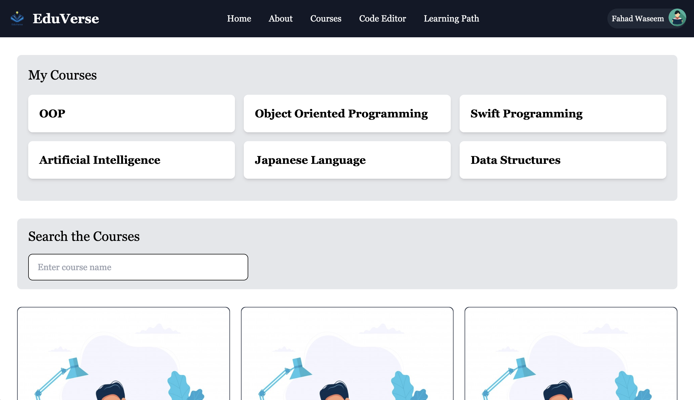
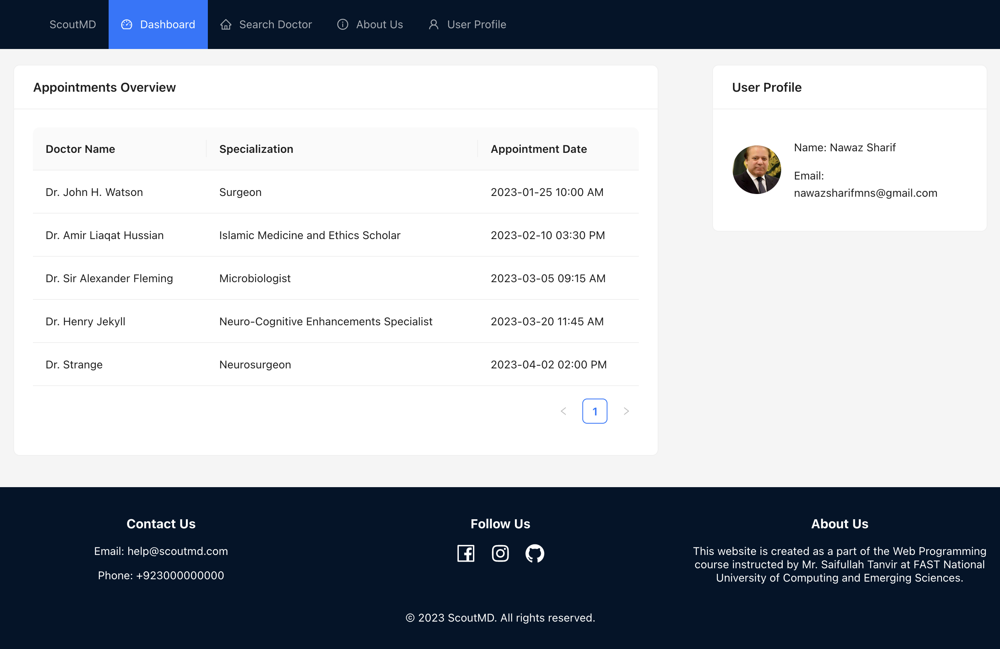
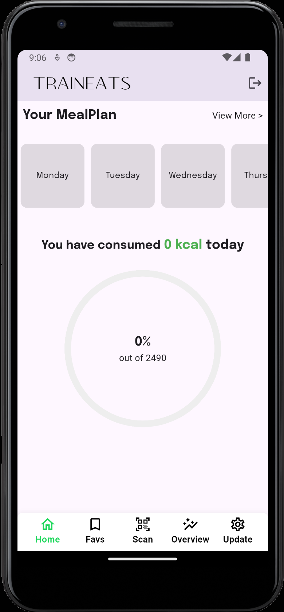
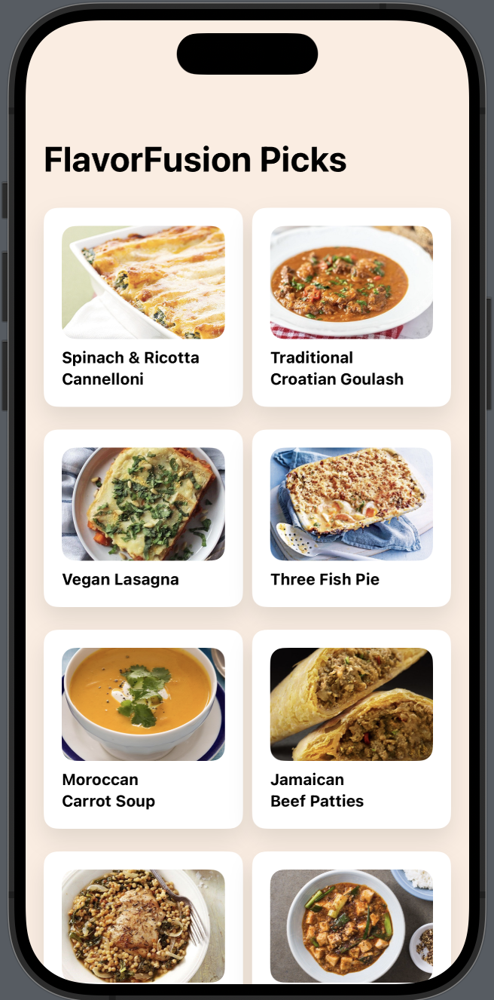

About Me
Hello! I'm Fahad, a dedicated web developer passionate about crafting seamless user experiences. With a strong foundation in frontend and backend technologies, I specialize in building responsive and intuitive web applications.
My journey in web development has led me to create diverse projects that showcase my skills and creativity. From EduVerse, a comprehensive web learning platform integrating a code editor, to ScoutMD, streamlining the process of finding the right doctor, each project reflects my commitment to innovation and usability.
On the mobile front, I've ventured into Flutter for apps like TrainEats, which simplifies meal tracking, and embarked on my iOS Swift journey with FlavorFusion, a sleek app for exploring culinary delights.
My passion extends to data science and AI, where I've tackled challenges like detecting fake job listings and exploring cricket player statistics using machine learning techniques.
With each project, I aim not only to solve problems but also to create engaging digital experiences that make a positive impact. Welcome to my portfolio, where innovation meets functionality!
Projects
EduVerse
EduVerse is a comprehensive web learning platform developed as my Final Year Project. Built using React and Firebase, it features an integrated code editor powered by acejs, forums, video lectures, PDF notes, and quizzes. EduVerse is designed to enhance the learning experience by providing a variety of resources and interactive elements to help students check their knowledge and progress effectively.
Visit EduVerseScoutMD - Doctor Finder Web App
ScoutMD is a web application designed to streamline the process of finding the right doctor in a hospital. The app allows users to input details about their ailments and the affected body part, guiding them to the appropriate doctor's office. The primary goal is to automate and expedite the process of finding a doctor based on a patient's specific ailment and affected body part, reducing waiting times, easing hospital traffic, and enhancing accessibility. The frontend is built using ReactJS, with Node.js and Express handling the backend, and MongoDB Atlas as the database.
View on GitHubTrainEats
TrainEats is a mobile application developed as a freelance project on Fiverr. The app allows users to scan meals using their camera to automatically add them to their consumed meals list. It also tracks calories, reminds users to drink water, and records the calories burnt to help users achieve their desired weight. Built using Flutter for the frontend and Firebase for the backend, TrainEats aims to make healthy living and weight management easier and more efficient.
FlavorFusion
Embark on a culinary journey with FlavorFusion, my latest iOS app crafted entirely in SwiftUI. Designed around the MVVM architecture, FlavorFusion leverages TheMealDB API to offer a rich selection of meal recommendations. From delectable appetizers to satisfying main courses and indulgent desserts, FlavorFusion is your go-to companion for exploring diverse recipes. Its intuitive interface and seamless functionality showcase the power of SwiftUI in delivering a modern and immersive user experience.
View on GitHubFake Job Listing Detection

Explore my AI project focused on detecting fake job listings using natural language processing (NLP) techniques with PySpark's MLlib. Leveraging a dataset of 18,000 job descriptions, including 800 labeled as fake, the project aims to automatically identify suspicious postings.
By employing advanced text processing and machine learning algorithms, I developed an NLP model to accurately flag fraudulent job ads for further review. This project showcases the application of AI in enhancing job marketplace integrity and reliability.
View on GitHubCricket Score Predictor

Delve into my data science project where I explore cricket player statistics using a comprehensive approach. The journey begins with meticulous data wrangling, employing various preprocessing techniques to refine a complex dataset with 154 columns into a focused subset.
An in-depth exploratory data analysis uncovers patterns in batting styles, national distributions, and performance metrics, offering valuable insights into the cricketing landscape. Using TensorFlow and Keras, I crafted a neural network model to predict player runs based on key metrics.
The model underwent rigorous training and evaluation, demonstrating its effectiveness in capturing intricate dataset relationships. This project amalgamates data wrangling, exploratory analysis, and machine learning to unveil multifaceted dimensions of cricket statistics, providing holistic understanding and predictive insights.
View on GitHubContact
Email: fahadwaseem8@gmail.com
LinkedIn: linkedin.com/in/fahad-waseem-b1786323a/
GitHub: github.com/Fahadw9/